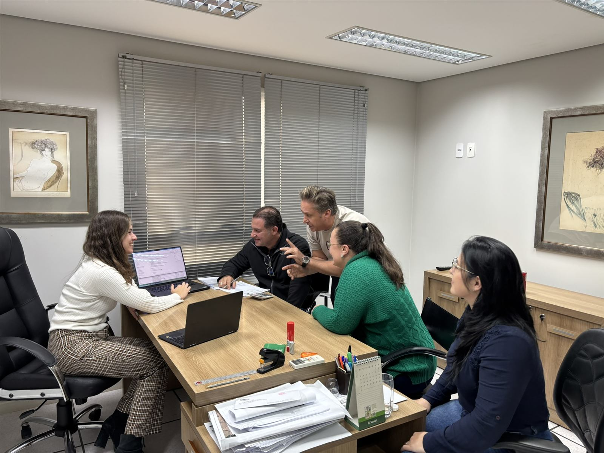

Dá pra fazer fluxo de caixa com IA — e o ganho de tempo é grande. No Grupo Stringhetta, o fechamento do fluxo de caixa levava cerca de dois dias por semana num processo manual de planilha. Depois de um treinamento de IA feito em cima da operação real, a mesma rotina passou a levar minutos. A IA não tomou o controle financeiro de ninguém: ela tirou o trabalho braçal de consolidar, organizar e cruzar dados, e devolveu o tempo pra quem precisa decidir.
Deixa eu te contar como isso aconteceu, porque não foi mágica — foi método. O Stringhetta é um grupo do agro, e como toda operação séria, vive de controle. O fluxo de caixa era feito na mão: puxar dados de vários lugares, jogar numa planilha, conferir, formatar, consolidar. Toda. Santa. Semana. Dois dias de uma pessoa qualificada gastos num trabalho que era mais braço do que cabeça.
O que a gente fez (e por que funcionou)
Eu não cheguei com uma solução de prateleira. Eu fui pra dentro da operação entender o processo real: de onde vinham os dados, como a planilha era montada, onde estava a parte chata e repetitiva. Só depois de mapear isso é que a gente treinou o time a usar o Claude pra fazer o trabalho pesado — em cima das planilhas e dos dados que a empresa já tinha, sem trocar sistema nenhum.

Repara que na foto eu tô com o time, na planilha real deles. Esse é o segredo do resultado. Um treinamento genérico de "IA no financeiro" ensinaria prompts bonitos que não encaixam em lugar nenhum. Fazer dentro da operação significa que, no fim, o time não saiu com teoria — saiu com o próprio fluxo de caixa já rodando de um jeito novo.
A prova: um produtor rural falando
Eu poderia ficar aqui te contando os números, mas prefiro deixar quem viveu o resultado falar. Esse é o Rafael Magaldi, produtor rural, cliente do Stringhetta. Ele não tem nenhum motivo pra puxar meu saco — e mesmo assim gravou isso:
Fechamento de fluxo de caixa de ~2 dias por semana pra minutos, depois de um treinamento de IA feito na operação real. Sem trocar de sistema, sem virar a empresa de cabeça pra baixo. Só tirando o trabalho braçal do caminho de gente qualificada.
O princípio que vale pra qualquer empresa
Aqui é onde esse case deixa de ser sobre o Stringhetta e passa a ser sobre você. Porque o fluxo de caixa é só um exemplo de um princípio bem mais amplo:
Todo processo repetitivo que hoje vive numa planilha é candidato a virar minutos com IA. Se alguém do seu time gasta horas toda semana copiando, colando, consolidando e formatando dados na mesma estrutura, esse é exatamente o tipo de tarefa que a IA acelera muito.
Olha pra sua semana e procura os suspeitos de sempre:
- Fluxo de caixa e conciliação — puxar, cruzar e fechar números que vêm de várias fontes.
- Relatórios recorrentes — aquele report que alguém monta toda segunda, sempre na mesma cara.
- Consolidação de vendas ou estoque — juntar planilha de várias frentes num painel único.
- Qualquer coisa que começa com "eu exporto isso e colo aqui" — se tem exportar-e-colar toda semana, tem IA pra resolver.
Treine seu time pra fazer isso sozinho
Eu vou pra dentro da sua operação, mapeio os processos que hoje comem horas e treino o time a usar IA neles — como no Stringhetta. E quando o processo é grande o bastante pra valer uma automação feita de ponta a ponta, a NewScale entra com um projeto done-for-you.
Se você quer entender antes o que o Claude consegue fazer com planilha e dados — a base de tudo que a gente usou no Stringhetta — dá uma olhada no Guia do Claude. E se seu caso já é grande demais pra treino e pede automação feita por fora, a NewScale faz esse tipo de projeto done-for-you.